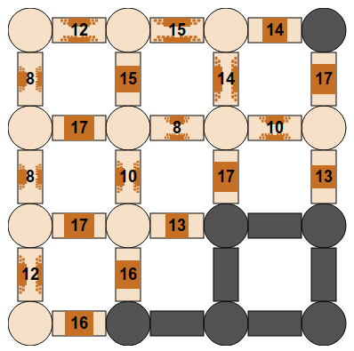

Ratkaisu
Tässä toimii seuraava yleinen ratkaisuperiaate: valitaan jokaisella askeleella sellainen vielä käymättömään huoneeseen johtava käytävä, jossa on vähiten seiniä.
Esimerkiksi oheisen kuvan tilanteessa etenisimme seuraavaksi oikealla alhaalla olevaa käytävää pitkin, jossa on vain kaksi seinää. Sen yläpuolella olevat kaksi muuta käymättömään huoneeseen johtavaa käytävää ovat huonompia, koska niissä on kolme seinää.

Tässä toimii seuraava yleinen ratkaisuperiaate: valitaan jokaisella askeleella sellainen vielä käymättömään huoneeseen johtava käytävä, jossa on vähiten seiniä.
Esimerkiksi oheisen kuvan tilanteessa etenisimme seuraavaksi toisen sarakkeen alarivillä olevaa käytävää, jossa on yksi seinä.

Tässä toimii seuraava yleinen ratkaisuperiaate: valitaan jokaisella askeleella sellainen vielä käymättömään huoneeseen johtava käytävä, jossa on ohuin seinä.
Esimerkiksi oheisen kuvan tilanteessa etenisimme seuraavaksi jompaa kumpaa käytävää, joissa on 13 yksikköä paksu seinä, koska kaikissa muissa käymättömiin huoneisiin johtavissa käytävissä on paksumpi seinä.

Tämä on tietojenkäsittelyä!
Tehtävä vastaa tietojenkäsittelyssä hyvin kuuluisaa pienimmän virittävän puun ongelmaa. Kun on annettu jokin solmuista (tässä huoneista) ja niiden välisistä painotetuista kaarista (tässä seiniä sisältävistä käytävistä) koostuva graafi, on minimivirittävä puu sellainen mahdollisimman pienen painojen summan omaava kaarien (tässä käytävien) joukko, joita pitkin pääsee kaikkiin solmuihin.
Minimivirittävät puut voivat kuvata monia käytännön tilanteita. Esimerkiksi jos meillä on joukko rakennuksia, jotka halutaan yhdistää toisiinsa verkkokaapelilla (vaikkapa internet-yhteyden jakamiseksi), voisimme ajatella taloja solmuina ja kunkin taloparin välisen kaapeloinnin kustannuksia painotettuna kaarena. Tällöin halvin tapa yhdistää rakennukset yhtenäiseksi verkoksi niin, että kustakin rakennuksesta kulkee jonkinlainen kaapelireitti kuhunkin toiseen rakennukseen, voidaan määrittää muodostamalla minimivirittävä puu.
Tehtävän ratkaisun yhteydessä kuvattu periaate vastaa Primin algoritmia, joka on yksi tunnetuimmista minimivirittävän puun ratkaisualgoritmeista.
Katso lisää esim. https://fi.wikipedia.org/wiki/Graafi, https://fi.wikipedia.org/wiki/Virittävä_puu ja https://en.wikipedia.org/wiki/Prim's_algorithm (englanniksi).